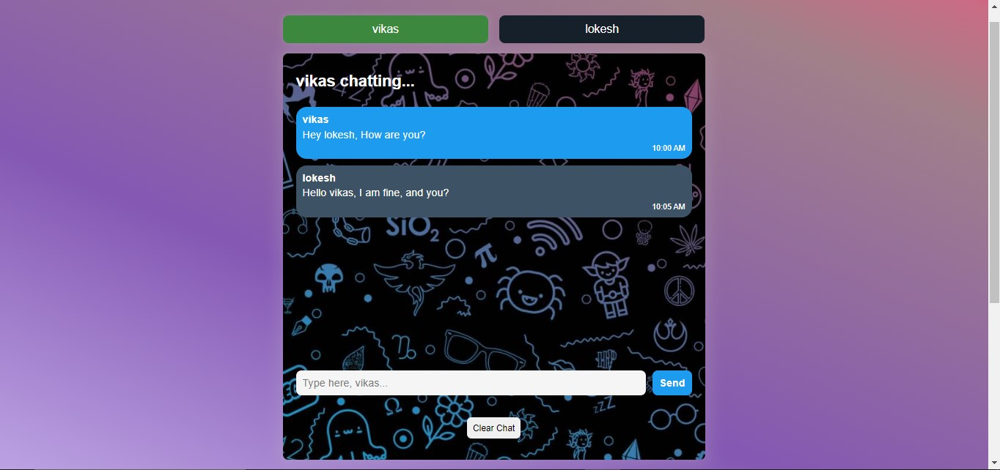
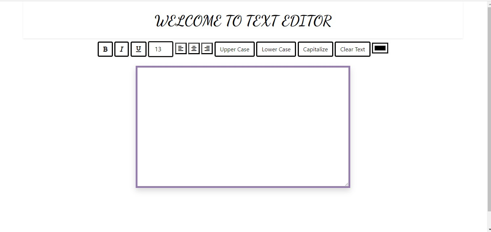

Web Developer | Designer
Hi, I'm Lokesh Reddy. A passionate web developer with a focus on creating clean and user-friendly websites.
This web chat application is a minimalist yet effective way to facilitate real-time communication between users. Built using HTML and CSS, the user interface is clean and user-friendly.
This basic text editor is a lightweight and straightforward tool designed for creating and editing plain text documents. It is built using HTML and CSS, offering a simple yet functional interface
Email: juturulokeshreddy@gmail.com
Phone: (123) 456-7890